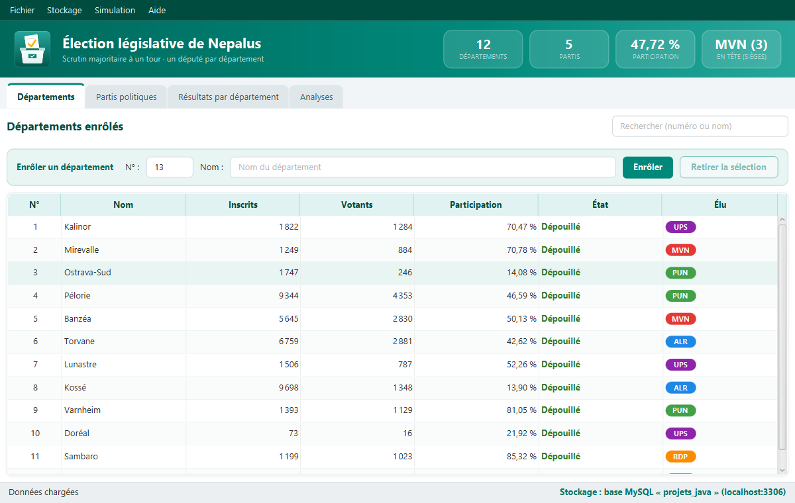
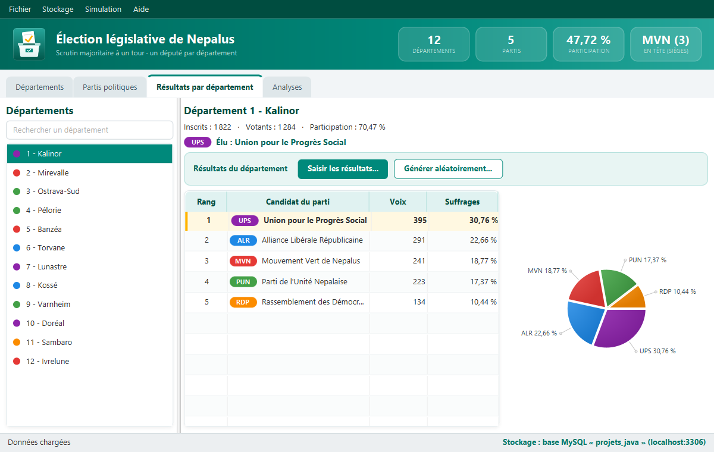
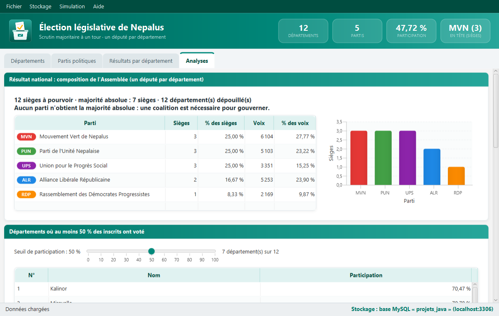
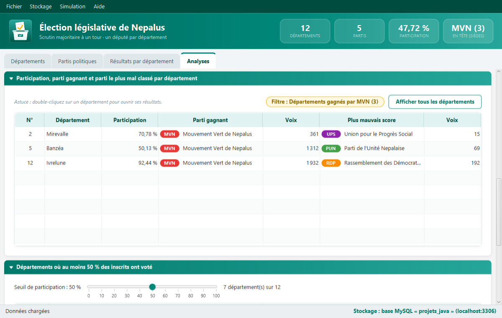

Le projet
Nepalus est un pays imaginaire découpé en départements. Chaque parti y présente un candidat dans chaque département, et le scrutin est majoritaire à un tour : celui qui a le plus de voix est élu. Deux règles s'ajoutent : pas de bulletin blanc, et jamais deux candidats à égalité dans un même département.
Nous avons réalisé cette application dans le cadre du cours de Java SE du Prof. Bi Tra GOORE, en Master 2 Data Sciences à l'INP-HB de Yamoussoukro.
Ce que fait l'application
Enrôler départements et partis
On les saisit un par un, ou on charge un jeu de démonstration de 12 départements et 5 partis.
Simuler le vote
Inscrits, votants et voix sont tirés au hasard, en respectant toutes les règles du scrutin. On peut aussi saisir les résultats à la main.
Analyser les résultats
Parti gagnant et dernier de chaque département, participation, composition de l'Assemblée, majorité absolue, statistiques et graphiques cliquables.
Conserver les données
Enregistrement dans des fichiers CSV, ou dans une base MySQL pour ceux qui ont XAMPP.
Aperçu




Installer et lancer
- Si Java n'est pas encore installé, installez Java 21 (Temurin).
Pour vérifier, tapez
java -versiondans un terminal. - Téléchargez election-nepalus.jar.
- Double-cliquez sur le fichier, ou lancez-le depuis un terminal ouvert dans le dossier de téléchargement :
java -jar election-nepalus.jar - Dans l'application, choisissez Fichier > Données de démonstration, puis Simulation > Générer les résultats aléatoirement.